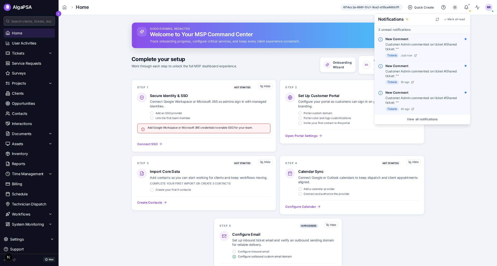
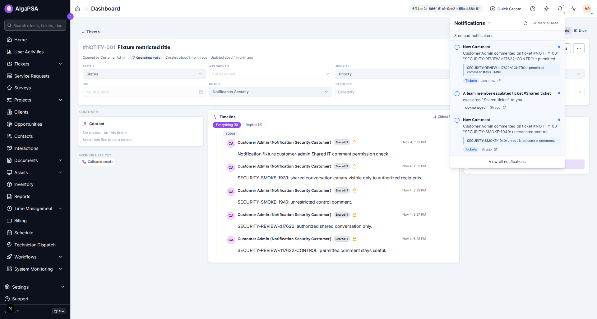
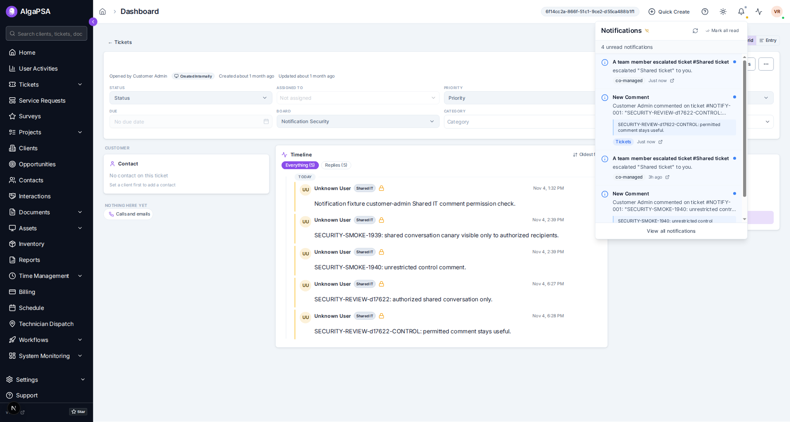

Sponsor notifications respect current access
A. What changed and why it matters
A sponsor may read a shared ticket while being denied its title or conversation. Previously, notifications could reveal those hidden fields. Delayed routing mail could also go to the address captured before a sponsor changed their mailbox. Notifications now apply each recipient’s current field permissions, and routing recovery resolves the current active sponsor identity and mailbox while completing the original delivery ledger.
The captain should decide whether restricted notifications protect hidden information while permitted notifications remain useful, both normally and after delivery failure.
PR #4094 · d17622d44fc011c45061041f61d221e113223e6b
Runtime demonstration SHA: d17622d44fc011c45061041f61d221e113223e6b (2026-11-04). This is historical evidence for that exact revision. Current PR head at repair start: 04bbb5627289509a3ef71826edfbaaa943f599a4. Intervening PR changes include deliveryProvider.ts, internalNotificationSubscriber.ts, sendEventEmail.ts and other related modules; equivalence has not been established. The app server is intentionally stopped, so this guide does not claim live validation of the current PR head. Prepared 2026-11-04T23:32:11.565177+00:00. The recording and linked live artifacts below were exercised on d17622d44fc011c45061041f61d221e113223e6b only.
Historical runtime evidence at d17622d44fc011c45061041f61d221e113223e6b demonstrated both notification findings: restricted and unrestricted comment delivery, ordinary routing delivery, and failed routing replay after an address/policy change. This is an agent demonstration, not human approval.
Limits: GreenMail replaces external mail delivery. Routing setup and replay use PostgreSQL/Redis with the real app subscribers; the automatic five-minute recovery scheduler was not exercised. Existing fixture time-entry/project permissions are limited and outside this notification journey. CI and broad typechecks were not rerun. Optional production is registered but has not been built, started, or visited.
Development: NOTIFY-001 — notification fixture is the tested app. Full Open Review: NOTIFY-001 — on demand uses production port 4395; all production links below are unvisited until requested. Lightweight review needs only this guide and recording.
B. Start here: the main walkthrough
Watch the 71-second recording first, then follow the numbered journey. The recording shows the isolated customer author at the ticket with the restricted recipient assignment restored. That browser session is historical and is not claimed to remain signed in; the development app server is stopped. Captured screens and delivery records below are the repeatable evidence.
Recording chapters and timing · Assertions over actual SMTP and database evidence
- Author a shared comment. Open NOTIFY-001 — customer author view (on demand) or the tested development ticket. Select Add Comment, choose Shared IT, type a unique message, then Add Comment. The editor and audience menu have no direct URL. Expected: the comment persists and reaches authorized sponsors. Actual:
SECURITY-REVIEW-d17622persisted as comment515aa1fa-4061-4848-95f3-f437f32d11ff; a second control comment also persisted. Persisted comments and recipient notifications. The author’s runtime ticket read/update permissions and stale-flag repair are verified by 12 fixture behavioral tests.

- Inspect the restricted recipient. Switch roles using development sign-in (sign out first). Fixture identity details are in the fixture catalog. Open NOTIFY-001 — sponsor view (on demand) / tested sponsor detail, then the notification bell (no direct URL for its open state). Expected: the ticket title and conversation stay hidden; the new notification has no comment preview. Actual: shared detail hides both; the new notification reads Customer Admin commented on ticket #Shared ticket: "". Actual restricted SMTP message likewise contains neither title nor comment body.


- Compare the unrestricted recipient. The control has independent read policy with no redactions. The demonstration temporarily selected that recipient via the fixture assignment script, then posted another Shared IT comment through the same customer editor. Open the same tested sponsor detail as the control and its notification bell. Actual: the title and
SECURITY-REVIEW-d17622-CONTROLremain visible in both the in-app notification and actual control SMTP message. The restricted assignment is restored for repeat review.

- Ordinary routing still delivers. A fresh routing event for NOTIFY-001 — sponsor view (on demand) was published through the card’s isolated Redis stream. The real subscriber delivered the ordinary routing email with permitted title and actor on its first attempt. Original routing ledger: sent, attempts=1. This backend consumer was exercised live using event setup, not a UI routing gesture.
C. Representative failure and recovery
A failed mail must not authorize today’s user but deliver yesterday’s data to yesterday’s mailbox. For NOTIFY-001 sponsor detail, the review seeded routing source cc658985-1411-4c26-a0e9-01524dadc3a3 and temporarily pointed only fixture sponsor SMTP to closed port 1. The first attempt failed with ECONNREFUSED and retained the captured recipient.
After restoring SMTP, the sponsor email changed to an uppercase, whitespace-padded current address. Home policy hid title/organization; relationship policy hid ticket number/actor. Replaying through the real server produced masked SMTP mail to the normalized current address and completion of the original old-address ledger with attempts=2. The old mailbox count stayed unchanged. In-app routing also completed with masked content.

Operational interpretation: repair the mail provider, then retry through the authorization-aware recovery path. Do not resend a cached rendered message. This demonstration used event replay rather than waiting for the automatic scheduler. Exact replay and restore commands and policy/address change script are available for repetition. All temporary SMTP/address/policy/assignment changes were restored; baseline verification passed.
D. Review decision
Demonstrated: customer comment authoring; per-recipient email and in-app redactions; useful unrestricted content; ordinary routing; retry with current combined policy, normalized current mailbox, and original-ledger completion. Focused automated checks passed 51 routing/projection cases and 12 fixture cases. No new product defect was observed. Automatic scheduling, external vendor delivery and optional production startup are outside this demonstration.
PR #4094 is already merged. No merge approval or merge action remains. Review the merged result and this historical evidence; if current-head runtime evidence is required, arrange a separately authorized live-validation step. Do not interpret this guide as current-head runtime approval.
E. Reference appendices
Fixture identities, routes and starting state
Canonical test login: qa@emeraldcity.oz / NineMinds1234!; verified through the UI. This general QA identity is distinct from the dedicated notification roles. Their local test login definitions are linked in fixture identity definitions; credentials are not copied here. All three fixture logins worked in this run.
| Role / fixture | Exact identity / entry |
|---|---|
| Customer author | user c1aa0b50-d026-5f7d-95e0-9cac66672bd1; tenant 96d5fbd6-c264-51a1-98cd-2c9e480cd959. NOTIFY-001 customer ticket (on demand) |
| Restricted sponsor | user 340aa261-3f33-5eb2-8e56-36dfb1e4a02e; hides tickets.title, comments.content, assignee_name. Assigned at baseline. NOTIFY-001 shared ticket (on demand) |
| Unrestricted sponsor | user 395c61f9-6cb1-52df-944d-5829636e2136; independent policy without redactions. Same shared ticket route. |
| Shared relationship | 66cb6b8e-062f-5fd0-a48f-6092b7d5c05c; sponsor tenant 6f14cc2a-866f-51c1-9ce2-d55ca488b1f1. Validated relationship/ticket detail |
There is no verified direct user-management record link in this run; roles are accessed through sign-in and the linked ticket, not an asserted user-detail route. Fixture owns active allocation, operation locator, staff assignments, company context and both tenant SMTP configurations. Test mail stays in the local emulator.
Environment, services and reset
Development :3988 ticket; guide :4394 guide; optional production :4395 ticket — unvisited/on demand. The optional production review app remains unbuilt and stopped. App URLs are historical and currently unverified.
GreenMail is the real wire-level SMTP emulator in compose container alga-psa-local-test-imap-test-server-1, SMTP port 3025, HTTP 8080. Registered review-smtp monitors this existing container, with its HTTP readiness checked; compose owns its lifecycle. Restricted fixture mailbox API / Control fixture mailbox API. Sanitized captures above are easier to read; reply tokens were omitted from published text.
Card Redis prefixes: alga-psa:security-2-findings-in-deliveryprovider-ts:, stream prefix event-stream:security-2-findings-in-deliveryprovider-ts:, group security-2-findings-in-deliveryprovider-ts. Consumer attribution: current consumer-641721 maps to this checkout/server; old consumer-4118487 is a stale Redis entry with no process. No competing live consumer was observed.
Reset, replay, verification and board start commands · Local DB script runner · Scoped restore script. Normal baseline is restored; current demonstration comments and sent ledgers are retained. Full reset removes those records and fixture sessions; do not reset the shared mailbox service globally.
Focused checks, source and case evidence
51 routing/projection behavioral tests · 12 fixture tests · Preflight fixture verification · Restored fixture verification · Live assertions · PR checks at merge.
Current identity and notification authorization · Canonical projection · MSP role/permission upserts · Fixture behavioral regressions.
The historical d17622d demonstration used a verified dedicated notification fixture, board-managed dev-server, and GreenMail. The dev-server is now stopped. Normal comment actions and results are in section B; routing failure/actions/results/reset are in section C. Initial event · Retry event · Ordinary routing event. No mocked delivery handler was used. Attachment retry permutations are covered by existing implementation tests but were not rerun or exercised live in this preparation.
A short archive note for the superseded 2fb583e4b2 preparation is available in the historical guide; it is not evidence for the current PR head.